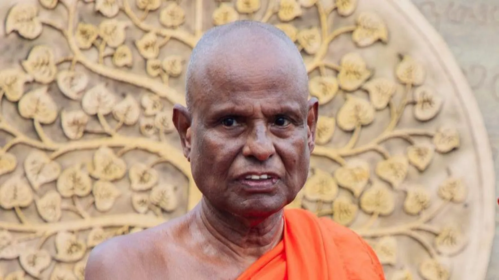
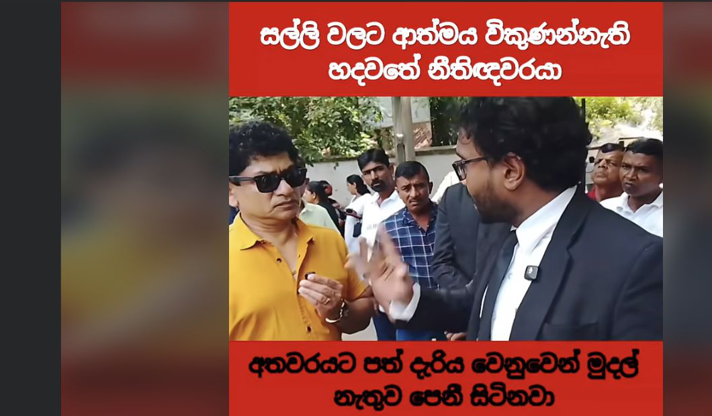
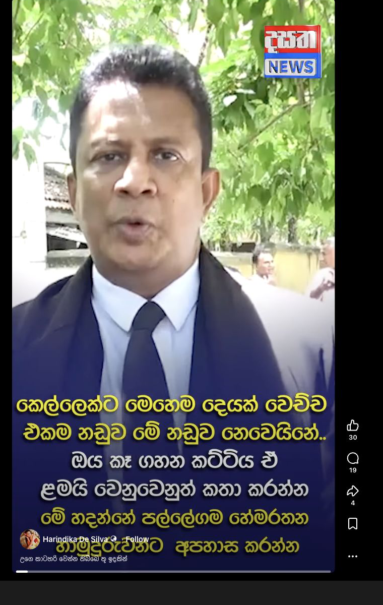
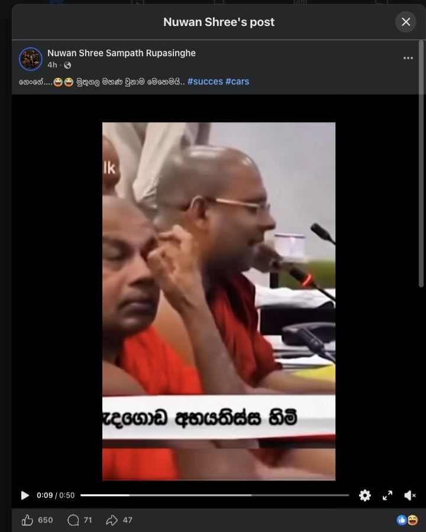
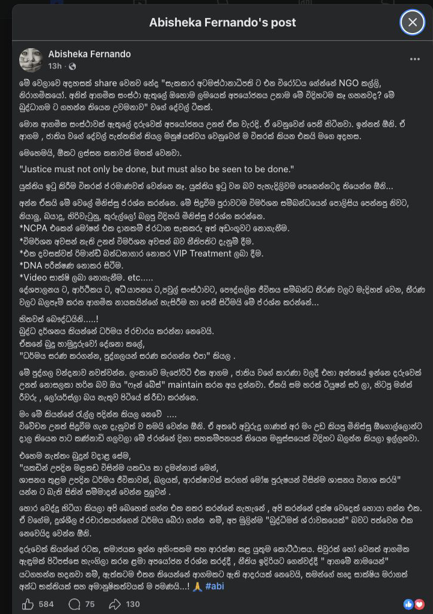

A robe can be a sign of discipline. A sacred office can be a place of public trust. A court file can be the only thing standing between truth and rumor. A child should never have to become public evidence for adults to prove that the law must be equal.
Reports from reputable outlets say Pallegama Hemarathana Thero was arrested and remanded in May 2026 in a case involving allegations of sexual abuse of a minor.1 Further reporting said he was later released on bail, and AP reported that he denied wrongdoing.2 No final court finding is captured in the sources used for this dossier.

This essay asks three direct questions. What do the complaint, child-protection intake, April 24 NCPA letter, B reports, court minutes, bail order, police progress reports, Attorney General correspondence, forensic-status records, and right-of-reply answers actually show?3 Did police, child-protection authorities, state actors, lawyers, media, courts, and religious institutions act without fear or favor? And when people say scrutiny of a powerful monk is an attack on the Sangha, what do they mean by Sangha?
The Buddhist question is not decorative. In the refuge sense, the Sangha jewel is not a temple office, title, hierarchy, court entourage, wealth, political access, or robes. The Ratana Sutta points to the praised eight persons, ye puggalā aṭṭha sataṃ pasatthāKp 6, and the recollection formula names the four pairs and eight persons, cattāri purisayugāni aṭṭha purisapuggalāAN 4.52.4
The robe tests whether reverence becomes immunity.
The clock tests whether April was ordinary investigation time or institutional delay.
The April 24 letter tests whether child protection had to chase police.
The Sangha jewel tests whether Buddhism is being protected or politically counterfeited.
What Can Be Said Safely
The public record has a limited but important spine. The case has been reported by international and local media as involving arrest, remand, bail, and allegations concerning a minor.5 Direct court records are still required for final public wording.
Official and institutional sources separately show the accused monk's public religious office and state-visible role.6 That office does not prove guilt. It does not prove interference. It does show that the case unfolded around a person with extraordinary public reverence and institutional weight.
The child-protection ethic is simple: the child is not evidence theatre. The public can demand records without consuming the private suffering of a minor.7
The April Problem
The April dates are the heart of the public dispute, and they are not yet a settled story. They are a record-demand map.
Those clocks may support serious criticism. They may also be partly explained by records we have not yet seen. That is why this essay should not say "cover-up" as a finding. It should say: show the records.
How Sacred Office Becomes Public Force
A sacred office is not only a belief. It can become a social permission structure. Power often appears as hesitation: the officer who waits, the journalist who softens, the witness who lowers their voice, the follower who confuses questions with betrayal. This is not a finding that those things happened here. It is why the record matters.
The government question is whether the state acted without fear or favor. The police and AG question is whether timing, court reporting, evidence steps, legal advice, and appearance matched the seriousness of the case. Journalist questions and transcript-source material raise concerns; police-conference material records police saying they acted after sufficient evidence and pursued statements, phone/bank evidence, crime-scene work, and AG advice.8 Both positions require primary records.
The religious-institution question is whether sacred status can coexist with transparent legal process. Supporting monks, religious institutions, or followers appearing around a case does not prove interference. But it does raise the public question: can reverence surround an accused person without intimidating truth?
Who Is Sangha?
If Buddhists take refuge seriously, then Sangha cannot be left vague. A senior monk is not the Ariya-sangha. A temple hierarchy is not the Sangha jewel. A title is not refuge. MN 142 keeps the distinction visible by speaking of giving to the Sangha, saṅghe ... dehiMN 142, rather than collapsing the whole refuge into one individual.9
Vinaya discipline is part of protecting the Sangha, not an embarrassment to it. The legal allegations still belong to court process. The disciplinary term pārājikaVinaya is used here only to mark the seriousness with which the tradition treats monastic sexual misconduct, not to decide this case.10
The Buddha's dispensation includes monks, nuns, laymen, and laywomen, bhikkhū bhikkhuniyo upāsakā upāsikāyoDN 16.11 A lay Buddhist who asks for records, child protection, and due process is not attacking Buddhism. They may be defending its seriousness.
If the Dhamma warns against wrong course through desire, hatred, delusion, and fear, chandā dosā bhayā mohāAN 4.17, then fear of religious power is still a wrong course.12 So is hatred of Buddhism.
The Parallel Child
The Pallegama case is one doorway into a broader standard: no adult institution should be able to lower the protection owed to a child. That principle also touches personal-law debates around Muslim child marriage and Buddhist child novice ordination. These issues are not the same as the Pallegama allegations, and they do not prove anything about the accused. They belong here because they expose the same civic weakness: adults often negotiate around children when the adult institution is religious, familial, communal, or politically respected.13
Muslim child marriage and the MMDA
The Muslim Marriage and Divorce Act is not an accusation against Muslims. It is a legal architecture problem. Sri Lanka's Registrar General guidance lists 18 as the age requirement for General and Kandyan marriage registration, while MMDA section 23 expressly contemplates registration of a marriage contracted by a Muslim girl under 12 if the Quazi authorizes it after inquiry.14
The current public reform record is also not vague. HRCSL's 2025 statement says MMDA reform is required for equality and the best interests of the child, records Cabinet-level reform history and delay, recommends an 18-year minimum under the MMDA, and recommends deleting the Penal Code 363(e) marital-exception phrase that weakens statutory-rape protection where the girl is the man's wife, over 12, and not judicially separated.14
Data without communal scapegoating
The data should discipline the argument, not inflame it. UNICEF said Sri Lanka's child-marriage prevalence is low compared with other South Asian countries, but estimated that in 2014 between 16,000 and 24,000 boys and girls under 18 were formally married or cohabiting. Girls Not Brides reports 1% of girls in Sri Lanka married or in union before 15 and 10% before 18, while listing drivers including gender inequality, dowry/kaikuli, family honour, poverty, conflict, disasters, and cohabitation recognized by communities as marriage-like.15
That means the public line must be careful: this is not "Muslims are the problem." It is that personal law, community pressure, gendered poverty, and political delay can make a girl easier to negotiate around than to protect.
Muslim society and political power
The power question is not whether every Muslim family, scholar, or institution supports child marriage. Many Muslim women, reform groups, lawyers, and rights advocates have pushed reform for years. The power question is why acknowledged reform can remain stuck while girls live under the old structure. HRCSL describes prior reports, Cabinet decisions, draft-bill review, support from Muslim groups and institutions, and delays that have frustrated reformers and continued victimization under problematic provisions.16
Novice ordination and choice
Buddhist novice ordination must be given the same child-protection weight. The Vinaya route distinguishes full ordination from novice going-forth: full Acceptance has a 20-year threshold, while the contested child-protection issue is novice pabbajja. The Mahavagga route records the rule that a boy under 15 should not be given going-forth, with a narrow "able to chase away crows" exception.17
A modern Buddhist society can honor that tradition by asking the modern capacity questions: does the child understand, assent, continue schooling, keep family contact, have a safe complaint route outside temple authority, and have a dignified path to leave?
Poverty, temple machinery, and the false comfort of reverence
The poverty link is central and must be named without shaming poor families. A child may "choose" novice life because it is the only visible route to food, schooling, family pride, or reduced family burden. That does not make every child ordination abusive, and it does not erase sincere religious aspiration. It means the choice is not free enough unless society proves the child is safe, educated, heard, and able to leave without stigma.18
The Sangha institution can become a machine when poor children supply temple continuity while elite families mostly keep their own children outside that cost. If renunciation is noble, it must be free enough to be renunciation. If the robe is discipline, the adult system around a child novice must be disciplined too.
Ask For Records, Not Rumor
- Original March complaint and first police entry.
- Any April 10 statement reference.
- April 27, May 4, and May 8 B reports and court minutes.
- Police progress reports and arrest log.
- April 22 NCPA intake or complaint record.
- April 24 NCPA letter and proof of receipt.
- NCPA court submissions and police response.
- Child-protection and witness-protection safeguards.
- May 8 court order, warrant, or B-report route.
- May 22 bail order and court minute.
- AG correspondence, appearance, advice, or non-appearance record.
- Defense/right-of-reply answers.
- Government Analyst production/status records.
- Current MMDA amendment status.
- Current Samanera safeguarding requirements.
- Sinhala/Tamil Buddhist and legal-language review.
Do Not Choose Between Silence And Hatred
The Dhamma does not ask the public to choose between silence and hatred. It asks for speech that is true, beneficial, and timely, bhūtaṃ tacchaṃ atthasaṃhitaṃMN 58, and it warns that hatred is not ended by hatred, Na hi verena verāni sammantīdha kudācanaṃDhp 5.19
Alañhi vo, kālāmā, kaṅkhituṃ, alaṃ vicikicchituṃ. Kaṅkhanīyeva pana vo ṭhāne vicikicchā uppannā.
කාලාමයෙනි, සැක කළ යුතු තැන සැක මතුවීම සුදුසුය. විචාර කළ යුතු තැන විචාර මතුවීම සුදුසුය.
Do not accept a public claim merely because it comes from reverence, rumor, tradition, outrage, office, teacher, or status. When the matter is doubtful, investigate what leads to harm and what leads to welfare.AN 3.65
Source Notes
Buddhist references list Pali route and anchor phrase first. English and Sinhala wording here is working translation. Sinhala/Tamil/French public rendering still needs reviewer approval.
Pali And Buddhist Notes
Dhammapada 5. Pali route: Dhp 5. Anchor: Na hi verena verāni sammantīdha kudācanaṃ. Working sense: hatred is not ended by hatred.
MN 58 Abhayarājakumārasutta. Pali route: MN 58. Anchor: bhūtaṃ tacchaṃ atthasaṃhitaṃ. Working sense: speech should be true, grounded, beneficial, and timely.
AN 4.17 Agati Sutta. Pali route: AN 4.17. Anchor: chandā dosā bhayā mohā. Working sense: do not go wrong through desire, hatred, delusion, or fear.
Ratana Sutta / Kp 6. Pali route: Kp 6. Anchor: ye puggalā aṭṭha sataṃ pasatthā. Working sense: the Sangha jewel points to noble disciples, not worldly office.
AN 4.52 Sanghānussati formula. Pali route: AN 4.52. Anchor: cattāri purisayugāni aṭṭha purisapuggalā. Working sense: four pairs/eight persons.
MN 142 Dakkhiṇāvibhaṅgasutta. Pali route: MN 142. Anchor: saṅghe ... dehi. Working sense: distinguish an individual recipient from the Sangha as community.
DN 16 Mahāparinibbānasutta. Pali route: DN 16. Anchor: bhikkhū bhikkhuniyo upāsakā upāsikāyo. Working sense: the Buddhist public includes monks, nuns, laymen, and laywomen.
Vinaya Pārājika 1. Pali route: Vinaya Pārājika 1. Anchor: pārājika. Use: seriousness only; no case finding implied.
AN 3.65 Kesamuttisutta / Kalama Sutta. Pali route: AN 3.65 Pali. Anchor: Alañhi vo, kālāmā, kaṅkhituṃ, alaṃ vicikicchituṃ; mā anussavena, mā paramparāya. Working sense: doubt is proper where the matter is doubtful; do not go merely by hearsay, tradition, status, or teacher-authority.
Case And Evidence Notes
1. BBC public trigger: Buddhist monk arrested over alleged rape of teen in Sri Lanka. Case reporting only; court records still needed.
2. AP bail/status route: Senior Buddhist monk accused of child sexual abuse released on bail. Used for bail/denial reporting, not as court order substitute.
3. Timeline controls: P17 timeline status audit and P18 corrected timeline check.
5. Case reporting cluster: BBC, AP, News 1st, Daily FT, Daily Mirror, and Al Jazeera/AFP as registered in source-register.csv.
6. Institutional context cluster: President's Office, News.lk, and Central Cultural Fund routes listed in the labelled reference register.
7. NCPA mandate and child-sensitive reporting routes are listed in source/register materials; child identity and intimate detail remain excluded from public narration.
8. Police conference route: P15 police-conference claim matrix and P16 exchange parse. Transcript route remains unverified pending primary records.
9. Sangha distinction route: P24 Ariya-sangha memo and MN 142.
10. Vinaya route: Pārājika 1 Pali-first note. Used only to show disciplinary seriousness.
11. Fourfold Buddhist public route: DN 16.
12. Wrong-course reference: AN 4.17. Public ethics, not legal proof.
13. Equal-protection routes: P22 MMDA synthesis and P23 monkhood/choice synthesis.
14. MMDA legal architecture route: MMDA section 23 via LawNet; Registrar General marriage-registration guidance; HRCSL 2025 MMDA reform statement; HRCSL 2026 observations note.
15. Child-marriage data route: UNICEF Sri Lanka 2018 estimate and Girls Not Brides Sri Lanka profile. Use as prevalence/context, not as proof about any Pallegama allegation.
16. MMDA power/reform-delay route: HRCSL's 2025 statement records reform committees, a 2021 Cabinet reform decision, draft-bill analysis, support from Muslim groups/institutions, and delays. The 2026 HRCSL page records Justice Ministry request for HRCSL observations on ongoing reform.
17. Novice-ordination route: Mahavagga / Mv.I on going-forth, under-15 rule, the crow-capacity exception, and Vinaya concern for novice conditions. Distinguish novice pabbajja from full upasampada.
18. Child-novice welfare route: Sri Lanka Journal of Forensic Medicine, Science & Law 2024 article, P23 monkhood/choice synthesis, and Department of Buddhist Affairs registration route listed in the P23 source register. Use as safeguarding argument, not as a claim that all child ordination is abuse.
What The Online Argument Shows
Social media is not a court file. It can break silence, harden claims, expose institutional hesitation, distort facts, protect power, or turn a child-protection case into spectacle. In this dossier, social posts and screenshots are treated as propagation evidence only: they show public framing, not factual truth.

S021. Working reference crop. Not evidence of allegation truth.
S022. Working reference crop. Rhetoric and spread only.
S029. Use for rhetoric-risk review only.
S030. High legal-risk social claim route; no quotation without review.